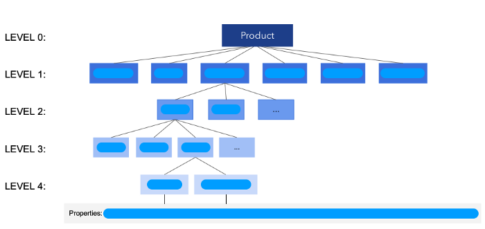

Our fashion ontology is our tool to understand products and people, and we built it to respond to very specific needs in our mobile apps.

Why we built our fashion ontology?
Fashion lacks a standard to classify clothes or to refer to the variety of concepts that describe products, styles, and personal fashion preferences.
At some point, we found ourselves receiving a lot of data via our consumer apps. We were receiving millions of described outfits, the described clothes in millions of closets, and hundreds of millions of what-to-wear queries from people trying to decide what to wear
Looking at this data, we only saw unorganized data, so chaotic that it was impossible to manage or build on top of it.
Our users could not really express their needs precisely in a ways that we could understand them, we couldn’t even describe the content displayed in our apps, in a way that could be found by those in need of it.
The backbone of our Taste Graph
Today, our fashion ontology is the backbone of our Taste Graph technology, and it is core to our development process.
We divide our ontology into two parts:
- Products ontology. It is a 5-level ontology that describes products and subjective characteristics of products;
- Outfits ontology. It is a 2-level ontology that describes outfits, mostly with subjective descriptors.
Our fashion ontology today
Our fashion ontology is our tool to understand products and people: it goes well beyond assigning descriptors to clothing. It has a very strong emphasis on describing people.
Our ontology today is the classification of descriptors needed to define a fashion product and a shopper’s need, in terms that are relevant for shoppers, for retailers and for data scientists. It contains the vocabulary used by people and by fashion retailers, with an understanding of how these descriptors are used together. Our ontology covers all aspects related to fashion purchase drivers: product properties, occasions, brands or influencers, or trends: It is formed by +2500 unique concepts and a few hundreds of thousands of descriptors.
What we’ve built on top of the ontology?
All our Chicisimo products have been built on top of our Fashion Taste Graph, and the ontology is it’s backbone. This is what the ontology has allowed us to build:
- Smart Virtual Closet Technology
- Taste Graph
- Search tech
- Recommendations is all forms and personalization
- Clothes classifier
- The ontology has also provided a unique common language for the team to communicate, and work, more efficiently.
How can I fashion ontology help your business?
Well, that’s a question you’ll have to answer prior to building one. You might already have a fashion taxonomy, and you’ll expand it little by little as your product team demands more tech strength.
In general, your fashion ontology will help you describe products and shoppers in a way that allows you to:
- Understand products and shoppers;
- Manage products and shoppers.
Your ontology will help you manage your catalogue with new browsing methods, humanized categories adapted to different types of shoppers or situations. It will reflect how your organization wants to talk to shoppers, always retaining total control over your voice while understanding the voice of your shoppers.
It will guide your data-attaching mechanisms to attach the right descriptors to products and shoppers. Data-attaching mechanisms include your taste graph, your editors, your deep learning algorithms, and other sources of product and shopper descriptors.
Characteristics of our ontology
Again, it will depend on the state you are at. Your ontology or fashion taxonomy is a tool that contains the organized and structured descriptors that define your products and your shoppers, in the terms that are relevant for your organization and your shoppers.
- Your ontology includes clothing and non-clothing descriptors;
- The ontology includes descriptors used by your organization, and by your shoppers;
- Descriptors are classified in categories, types, properties and more;
- We capture the correlations among your descriptors as defined by your products and your shoppers.
How can you use your ontology?
The Fashion Taste API main focus has been about the search for structure, in the unstructured world of clothing classification.
Once we learnt about clothing classification, we learnt that purchase drivers go well beyond clothing taste, and we gave a structure to those as well. So, believe us, we love clean and structured data that our algorithms can work with.
Despite of the above (or because of the above), we have found amazing value in shoppers’ unstructured input. This input are descriptors that you would not expect your shoppers to be using when interacting with you.
We’ve learnt that people refer to their fashion needs in ways that are very different to how retailers do. Also, the type of taxonomies that fashion retailers tend to have cover mostly product descriptions. But drivers of purchases are related to other factors: products, occasions, influencers, brands and trends. You can read about it here.
Need help?
Contact us